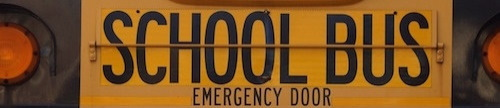
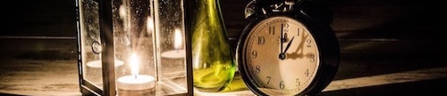
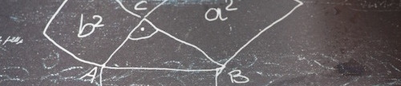

Uuummmm, this is a tasty apple!
Do you see any Teletubbies in here? Do you see a slender plastic tag clipped to my shirt with my name printed on it?
Do you see a little Asian child with a blank expression on his face sitting outside on a mechanical helicopter that shakes when you put quarters in it? No?
Well, that's what you see at a toy store. And you must think you're in a toy store, because you're here shopping for an infant named Jeb.
Well, the way they make shows is, they make one show. That show's called a pilot.
Then they show that show to the people who make shows, and on the strength of that one show they decide if they're going to make more shows.
Some pilots get picked and become television programs. Some don't, become nothing. She starred in one of the ones that became nothing.
The path of the righteous man is beset on all sides by the iniquities of the selfish and the tyranny of evil men.
Blessed is he who, in the name of charity and good will, shepherds the weak through the valley of darkness,
for he is truly his brother's keeper and the finder of lost children.
And I will strike down upon thee with great vengeance and furious anger those who would attempt to poison and destroy My brothers.
And you will know My name is the Lord when I lay My vengeance upon thee.
Look, just because I don't be givin' no man a foot massage don't make it right for Marsellus to throw Antwone into a glass motherfuckin' house,
fuckin' up the way the talks. Motherfucker do that shit to me, he better paralyze my ass, 'cause I'll kill the motherfucker, know what I'm sayin'?

Now that we know who you are, I know who I am. I'm not a mistake! It all makes sense! In a comic,
you know how you can tell who the arch-villain's going to be? He's the exact opposite of the hero. And most times they're friends,
like you and me! I should've known way back when... You know why, David? Because of the kids. They called me Mr Glass.
You think water moves fast? You should see ice. It moves like it has a mind. Like it knows it killed the world once and got a taste for murder.
After the avalanche, it took us a week to climb out. Now, I don't know exactly when we turned on each other,
but I know that seven of us survived the slide... and only five made it out.
Now we took an oath, that I'm breaking now. We said we'd say it was the snow that killed the other two, but it wasn't.
Nature is lethal but it doesn't hold a candle to man.